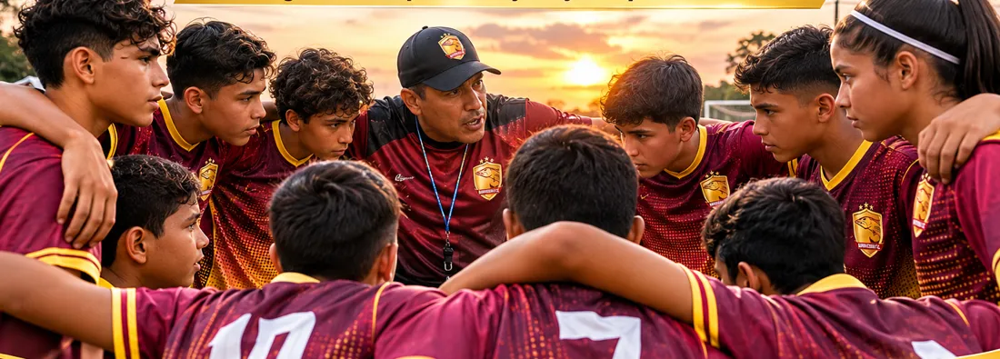
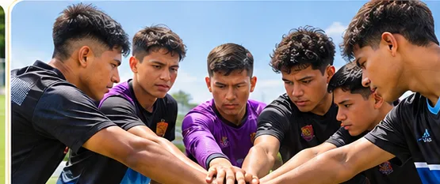

Il vero campione cresce dentro e fuori dal campo
Ogni bambino che arriva al Barracuda F.C. porta con sé un sogno. Alcuni vogliono segnare il gol decisivo in una finale, altri desiderano rappresentare la propria provincia e molti immaginano di diventare un giorno calciatori professionisti.
Ma dietro ogni sogno sportivo c'è una responsabilità ancora più importante: formare persone oneste, disciplinate, rispettose e solidali. Il calcio offre straordinarie occasioni per imparare a convivere, superare le difficoltà, lavorare in squadra e capire che il successo non si misura sempre in trofei.
Al Barracuda F.C. non vogliamo formare soltanto buoni calciatori. Vogliamo contribuire a formare persone capaci di migliorare la vita delle loro famiglie e comunità.

Esplora le 14 sezioni dell’articolo
Il vero campione cresce dentro e fuori dal campo
Una squadra riunisce bambini con personalità, abilità, esperienze e situazioni familiari differenti. Condividere questo spazio è una delle prime lezioni dello sport. Ogni giocatore impara ad aspettare il proprio turno, ascoltare, rispettare le regole e collaborare con compagni diversi.
Il calcio come scuola di vita

La disciplina nasce dai gesti quotidiani: arrivare puntuali, preparare la divisa, svolgere i compiti scolastici e rispettare gli impegni. Non va confusa con la paura o la punizione. Richiede regole chiare, spiegazioni adeguate e conseguenze proporzionate e rispettose.
Disciplina: piccole abitudini, grandi risultati
Il rispetto non dipende dal risultato né dalle capacità. Tutti i giocatori meritano dignità. Rispettare significa ascoltare, evitare insulti, accettare le differenze e riconoscere che gli errori fanno parte dell’apprendimento.
Rispetto: trattare gli altri come vorremmo essere trattati
Vincere porta gioia; perdere può causare frustrazione. Entrambe le esperienze sviluppano maturità emotiva. I genitori devono lasciare che i figli esprimano ciò che provano senza deriderli o pretendere che nascondano le emozioni.
Imparare a vincere e anche a perdere

L’onestà è uno dei valori fondamentali del Barracuda F.C. Un calciatore onesto rispetta le regole, riconosce i propri errori e non cerca vantaggi attraverso l’inganno.
Onestà e fair play
Unione non significa pensarla tutti allo stesso modo. Le differenze non impediscono di perseguire un obiettivo comune. Una squadra solidale aiuta i propri membri e fa sentire tutti parte del gruppo. L’inclusione richiede di rifiutare prese in giro e discriminazioni.
Unione, solidarietà e inclusione: nessuno deve sentirsi solo
Nessuno nasce sapendo già tutte le abilità calcistiche. Dribbling, passaggi e tattica richiedono pratica, pazienza e guida. Perseverare non significa ignorare il dolore o la stanchezza.
Perseveranza: anche gli errori insegnano

Condividere foto senza autorizzazione, diffondere voci, insultare o ridicolizzare qualcuno contraddice rispetto e solidarietà. Prima di pubblicare, pensiamo se il contenuto può ferire qualcuno o se serve un permesso.
I valori contano anche sui social media
I genitori sono modelli di comportamento. Quando un adulto insulta l’arbitro o umilia un giocatore, trasmette un messaggio contrario ai nostri valori. Accompagnare significa sostenere, ascoltare e riconoscere l’impegno.
I genitori: accompagnare senza fare pressione
L’allenatore influenza tecnica, fiducia e comportamento dei giocatori. Correggere senza umiliare, ascoltare senza discriminare e stabilire regole chiare sono responsabilità fondamentali.
L’allenatore: educare con l’esempio
I valori diventano più forti quando si trasformano in azioni. Questi dieci impegni possono essere letti in famiglia e discussi durante gli allenamenti.
Dieci impegni del giovane calciatore Barracuda
Durante un’amichevole, l’allenatore osserva non solo le azioni sportive, ma anche il rispetto, il gioco di squadra, l’onestà e la solidarietà.
Un’attività speciale: la partita dei valori
Ogni giorno offre l’opportunità di praticare un valore diverso. La famiglia può compilare un piccolo calendario settimanale e parlare di ciò che ha imparato.
La sfida in famiglia: sette giorni di valori
Dalla nostra fondazione, il 29 aprile 2017, il Barracuda F.C. cerca di contribuire allo sviluppo sportivo e umano di bambini, adolescenti e giovani della nostra comunità. I nostri valori istituzionali — onestà, trasparenza, disciplina, inclusione, rispetto, solidarietà ed eccellenza — guidano le nostre attività. Ci auguriamo che ogni giocatore porti con sé questi insegnamenti per tutta la vita, anche dopo la fine del suo percorso sportivo.
Che ogni giocatore sia riconosciuto non solo per il talento, ma anche per le qualità umane.